knitr::opts_chunk$set(echo = TRUE)
library(tidyverse)
library(lubridate)
library(igraph)
library(ggraph)
library(wordcloud)
library(tidytext)
library(stopwords)
library(dplyr)
library(tibble)
library(visNetwork)
library(stringr)
library(knitr)
library(ggplot2)
library(readr)
library(jsonlite)
library(janitor)
library(forcats)
library(ggrepel)Take-home Exercise 2 - VAST Challenge 2025 - Mini Challenge 3
1. Setting the Scene
Oceanus, once reliant on fishing, has undergone significant changes in the past decade. As authorities cracked down on illegal fishing, many suspects redirected their investments into the booming ocean tourism sector. This shift brought new attention to the island, especially after pop star Sailor Shift announced plans to shoot a music video there.
Amidst these developments, journalist Clepper Jessen, formerly an analyst at FishEye—began investigating the sudden closure of Nemo Reef
2. Overview
This take-home exercise presents the following scenario:
Question 4: Clepper suspects that Nadia Conti, previously linked to an illegal fishing operation, may still be engaging in unlawful activities in Oceanus.
- 4a. Use visual analytics to determine whether there is evidence suggesting that Nadia is involved in any illegal actions.
- 4b. Summarize Nadia’s activities visually. Do the findings support Clepper’s suspicions?
This exercise invites you to embark on an investigative journey, where the truth behind the suspect — Nadia Conti — will gradually unfold.
Summary of Nadia Conti profile
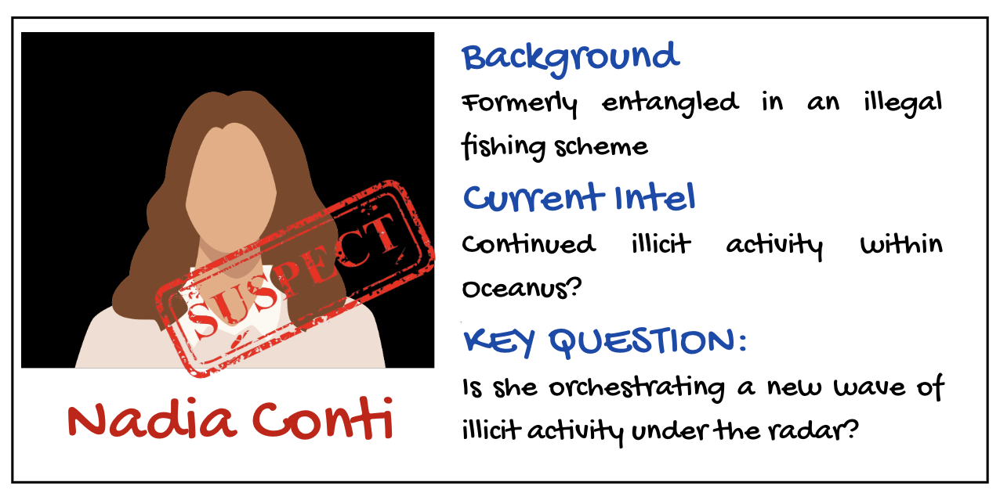
This suspect had been involved in an illegal fishing scheme. She is suspected that she may have continued illicit activity within Oceanus.
3. Case File Prepartion (Data Preparation)
The case file has been prepared and cleaned by the colleague Vanessa Riadi. Click here to view full steps of case file preparation.
4. Equipping tools for investigation (Load packages)
Before deeping into the case, neccesary tools are equipped to serve the investigation process.
5. Unpacking the case file
messages <- read_csv("data/communications_full.csv")The final case file contains those variables:
| sender | message_id | type.x | receiver | type.y | timestamp | content | sender_label | sender_type | receiver_label | receiver_type |
|---|---|---|---|---|---|---|---|---|---|---|
| Sam | Event_Communication_370 | sent | Kelly | received | 2040-10-05 10:48:00 | Hey Kelly, it’s Sam. This permit approval seems fishy. Could you get details on who signed off on it while you’re at the harbor? I need to understand these ‘special access corridors’ before my meeting with Elise tomorrow. | Sam | Person | Kelly | Person |
| Kelly | Event_Communication_3 | sent | Sam | received | 2040-10-01 08:13:00 | Sam, it’s Kelly! Let’s meet at Sunrise Point at 7 AM for birdwatching. Bring your new binoculars and some water. I’ve heard there might be some rare shorebirds passing through this weekend. Can’t wait! | Kelly | Person | Sam | Person |
7. Temporal Pattern of Nadia’s Communications
nadia_msgs <- nadia_msgs %>%
mutate(time = ymd_hms(timestamp),
hour = hour(time),
day = as.Date(time))
nadia_msgs %>%
count(day, hour) %>%
ggplot(aes(x = hour, y = n, fill = as.factor(day))) +
geom_col(position = "dodge") +
labs(title = "Nadia's Communication Frequency by Hour and Day", x = "Hour of Day", y = "Messages")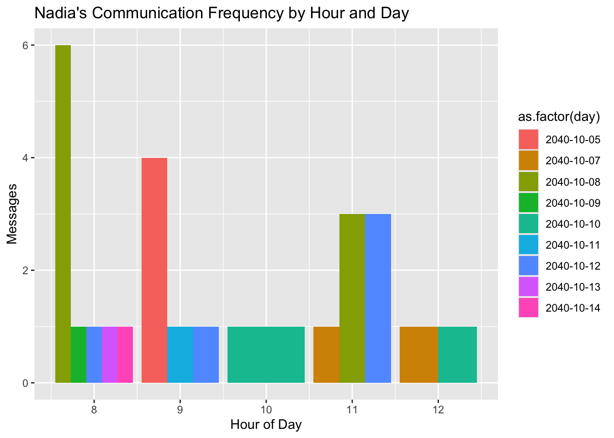
mentions_nadia <- mentions_nadia %>%
mutate(time = ymd_hms(timestamp),
hour = hour(time),
day = as.Date(time))
# Plotting temporal pattern
mentions_nadia %>%
count(day, hour) %>%
ggplot(aes(x = hour, y = n, fill = as.factor(day))) +
geom_col(position = "dodge") +
labs(
title = "Temporal Pattern of Messages Mentioning Nadia",
x = "Hour of Day",
y = "Number of Messages",
fill = "Date"
) +
theme_minimal()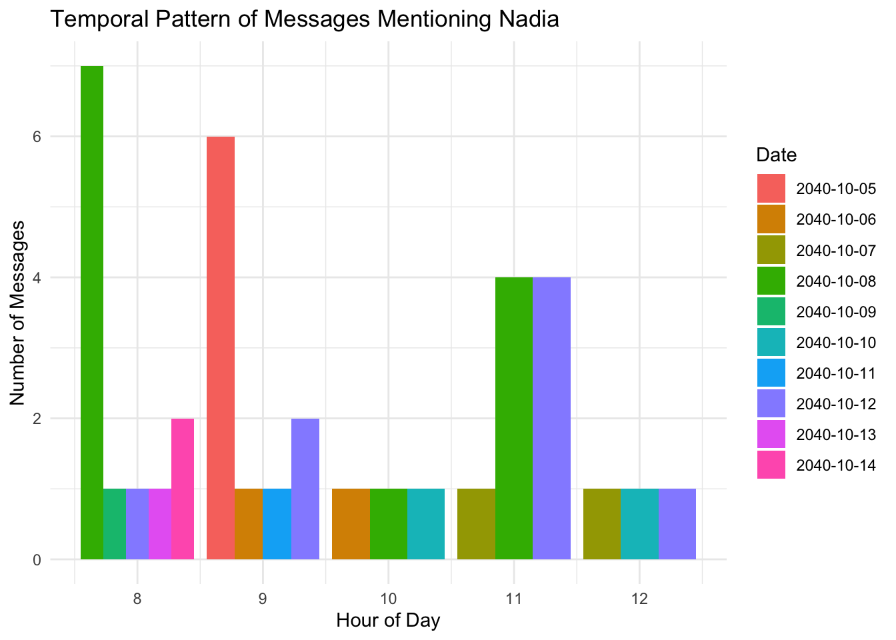
border: 2px dotted #333333; border-radius: 8px; padding: 16px; background-color: #f3f3f3; font-family: ‘Segoe UI’, sans-serif; color: #1a1a1a; line-height: 1.6; “} 🕵️♀️ Investigation Note: Communication Timing
A dual analysis of Nadia Conti’s messaging activity and the messages referencing her reveals a synchronized temporal pattern centered around the early morning hours (08:00–11:00).
- Nadia’s own communications peak at 08:00 on 2040-10-08, suggesting active initiation or participation in early-day coordination.
- Mentions of Nadia by others cluster similarly, with spikes on 2040-10-07 and 2040-10-12, pointing to her being a topic of strategic discussion during morning briefings.
This alignment suggests Nadia may play a central operational role, either directing plans or being a subject of surveillance or planning.
8. Nadia’s Relationship Network Graph
a. Direct Communication Network (Center = Nadia)
nadia_edges <- nadia_msgs %>%
count(sender_label, receiver_label) %>%
filter(!is.na(sender_label), !is.na(receiver_label)) %>%
rename(from = sender_label, to = receiver_label, value = n)
entity_info <- nadia_msgs %>%
select(name = sender_label, type = sender_type) %>%
bind_rows(nadia_msgs %>% select(name = receiver_label, type = receiver_type)) %>%
distinct()
nadia_nodes <- tibble(name = unique(c(nadia_edges$from, nadia_edges$to))) %>%
left_join(entity_info, by = "name") %>%
mutate(group = ifelse(name == "Nadia Conti", "Nadia Conti", type),
id = name,
label = name) %>%
replace_na(list(group = "Unknown"))
visNetwork(nodes = nadia_nodes, edges = nadia_edges) %>%
visEdges(arrows = "to") %>%
visOptions(highlightNearest = TRUE, nodesIdSelection = TRUE) %>%
visLayout(randomSeed = 123) %>%
visPhysics(stabilization = TRUE) %>%
visInteraction(navigationButtons = TRUE) %>%
visLegend()b. Mention Network (Center = Nadia, but not always direct link)
mention_edges <- mentions_nadia %>%
count(sender_label, receiver_label) %>%
rename(from = sender_label, to = receiver_label, value = n)
# Step 3: Create node attribute table
entity_info <- mentions_nadia %>%
select(name = sender_label, type = sender_type) %>%
bind_rows(mentions_nadia %>% select(name = receiver_label, type = receiver_type)) %>%
distinct()
mention_nodes <- tibble(name = unique(c(mention_edges$from, mention_edges$to))) %>%
left_join(entity_info, by = "name") %>%
mutate(
group = ifelse(str_detect(name, "Nadia"), "Nadia", type),
id = name,
label = name
) %>%
replace_na(list(group = "Unknown"))
# Step 4: Plot the network
visNetwork(nodes = mention_nodes, edges = mention_edges) %>%
visEdges(arrows = "to") %>%
visOptions(highlightNearest = TRUE, nodesIdSelection = TRUE) %>%
visLayout(randomSeed = 123) %>%
visPhysics(stabilization = TRUE) %>%
visInteraction(navigationButtons = TRUE) %>%
visLegend()border: 2px dotted #444; border-radius: 8px; padding: 16px; background-color: #f1f1f1; font-family: ‘Segoe UI’, sans-serif; color: #1a1a1a; line-height: 1.6; “} 🕵️♀️ Investigation Note: Nadia Conti’s Network Dynamics
A dual network analysis reveals two distinct but overlapping roles played by Nadia Conti within the communication ecosystem: one as a central communicator, the other as a frequent subject of discussion.
In the Direct Communication Network, Nadia is the focal point of interactions, maintaining high-volume, bidirectional exchanges with a range of individuals, organizations, vessels, and locations. The diversity and intensity of these connections suggest she holds a key operational or coordinating role.
In contrast, the Mention Network portrays Nadia as a recurrent topic in third-party conversations, even when she is not directly involved. Entities such as Sailor Shifts Team and Oceanus City Council reference her in their communications, indicating she is monitored, discussed, or consulted in broader strategic contexts.
This combined view positions Nadia Conti as both a core communicator and a strategic figure of interest.
c. Nadia’s Network involving Relationship, Associated Events
df <- df %>% clean_names()
df <- df %>%
mutate(
rel_label = str_remove(relationship, "^Relationship_"),
rel_label = str_remove(rel_label, "_\\d+$")
)
df <- df %>%
mutate(
event_type = case_when(
str_detect(event, "Event_Monitoring_") ~ "Monitoring",
str_detect(event, "Event_Assessment_") ~ "Assessment",
str_detect(event, "Event_VesselMovement_") ~ "VesselMovement",
TRUE ~ "Other"
)
)
sender_nodes <- df %>%
distinct(id = sender, label = sender, group = sender_type)
receiver_nodes <- df %>%
distinct(id = receiver, label = receiver, group = receiver_type)
comm_nodes <- df %>%
distinct(id = message_id, label = message_id, group = "Communication")
rel_nodes <- df %>%
distinct(id = relationship, label = rel_label, group = "Relationship")
event_nodes <- df %>%
distinct(id = event, label = event, group = event_type)
monitoring_entities <- df %>%
filter(str_detect(event, "Event_Monitoring_")) %>%
select(monitoring_type, findings, target, source) %>%
pivot_longer(everything(), values_to = "id") %>%
distinct(id) %>%
mutate(label = id, group = "MonitoringAttribute")
assessment_entities <- df %>%
filter(str_detect(event, "Event_Assessment_")) %>%
select(assessment_type, results) %>%
pivot_longer(everything(), values_to = "id") %>%
distinct(id) %>%
mutate(label = id, group = "AssessmentAttribute")
movement_entities <- df %>%
filter(str_detect(event, "Event_VesselMovement_")) %>%
select(movement_type, destination) %>%
pivot_longer(everything(), values_to = "id") %>%
distinct(id) %>%
mutate(label = id, group = "MovementAttribute")
nodes <- bind_rows(
sender_nodes,
receiver_nodes,
comm_nodes,
rel_nodes,
event_nodes,
monitoring_entities,
assessment_entities,
movement_entities
) %>% distinct(id, .keep_all = TRUE)
edges1 <- df %>%
transmute(from = sender, to = message_id)
edges2 <- df %>%
transmute(from = message_id, to = receiver)
edges3 <- df %>%
transmute(from = message_id, to = relationship)
edges4 <- df %>%
transmute(from = message_id, to = event)
monitoring_edges <- df %>%
filter(str_detect(event, "Event_Monitoring_")) %>%
select(event, monitoring_type, findings, target, source) %>%
pivot_longer(-event, values_to = "to") %>%
transmute(from = event, to)
assessment_edges <- df %>%
filter(str_detect(event, "Event_Assessment_")) %>%
select(event, assessment_type, results) %>%
pivot_longer(-event, values_to = "to") %>%
transmute(from = event, to)
movement_edges <- df %>%
filter(str_detect(event, "Event_VesselMovement_")) %>%
select(event, movement_type, destination) %>%
pivot_longer(-event, values_to = "to") %>%
transmute(from = event, to)
edges <- bind_rows(edges1, edges2, edges3, edges4, monitoring_edges, assessment_edges, movement_edges) %>%
filter(!is.na(from), !is.na(to))
visNetwork(nodes, edges) %>%
visEdges(arrows = "to") %>%
visOptions(highlightNearest = TRUE, nodesIdSelection = TRUE) %>%
visLayout(randomSeed = 123) %>%
visLegend()border: 2px dotted #444; border-radius: 8px; padding: 16px; background-color: #f6f6f6; font-family: ‘Segoe UI’, sans-serif; color: #1a1a1a; line-height: 1.6; “} 🕵️ Investigation Note
This comprehensive network visualization, while not delivering an instant or singular insight, is extremely valuable in tracing the entire structure of interactions, particularly across Communication, Event, and Relationship nodes.
It allows:
- Observe how entities like Nadia Conti interact with others through both direct and indirect links.
- Trace evidence paths back to events or inferred relationships (e.g., Colleague, Suspicious).
- Identify clusters, recurring actors, and potential outliers.
- Explore multi-hop connections that may reveal hidden influences or coordinated behavior.
9. Analyzing contents in Nadia’s communications by date
a. October 8th
nadia_related <- bind_rows(nadia_msgs, mentions_nadia_by_others) %>%
distinct(message_id, .keep_all = TRUE)
data("stop_words")
messages_oct8 <- nadia_related %>%
filter(date(timestamp) == as.Date("2040-10-08")) %>%
filter(!is.na(content), content != "")
top_words_oct8 <- messages_oct8 %>%
unnest_tokens(word, content) %>%
filter(!word %in% stop_words$word) %>%
count(word, sort = TRUE) %>%
slice_max(n, n = 20)
ggplot(top_words_oct8, aes(x = reorder(word, n), y = n)) +
geom_col(fill = "#2171b5") +
coord_flip() +
labs(title = "Top Keywords in Nadia-Related Messages (Oct 8, 2040)",
x = "Keyword", y = "Frequency") +
theme_minimal()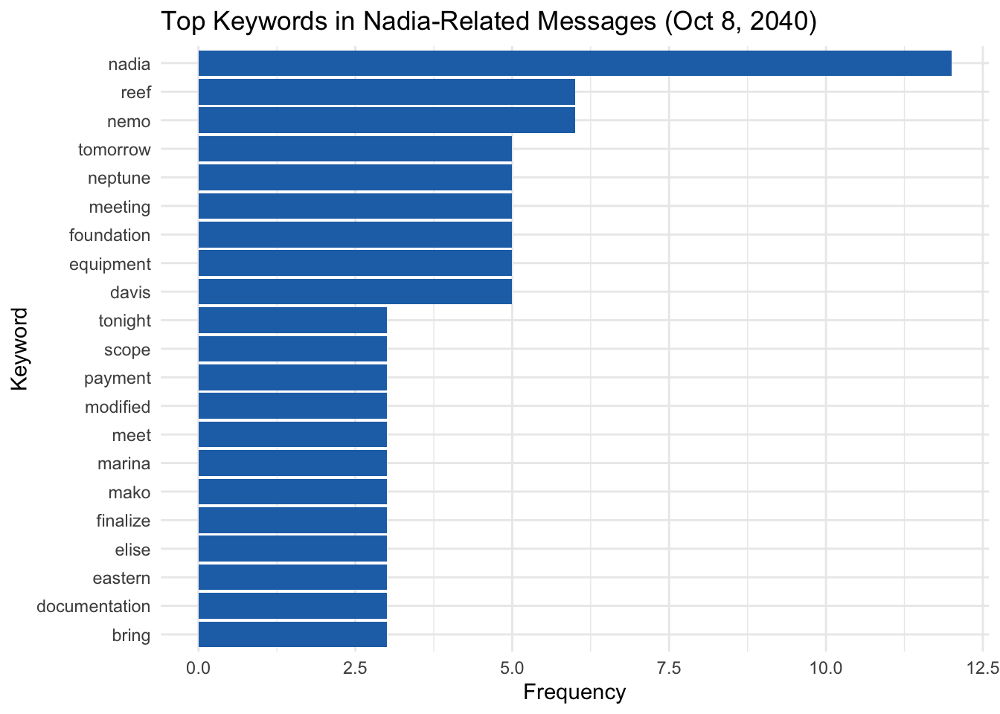
border: 2px dotted #444; border-radius: 8px; padding: 16px; background-color: #f9f9f9; font-family: ‘Segoe UI’, sans-serif; color: #1a1a1a; line-height: 1.6; “} 🕵️ Investigation Note: Keyword Patterns Suggest Nadia’s Strategic Role on October 8
- On October 8, the term nadia dominates keyword frequency, confirming she is at the center of message activity.
- High-ranking keywords such as reef, nemo, neptune, and marina suggest operational ties to maritime locations—particularly around Nemo Reef, a previously flagged hotspot.
- Terms like foundation, equipment, and modified imply ongoing construction or infrastructure adjustments, likely related to permit or logistics planning.
- Temporal indicators such as tomorrow and tonight reflect time-sensitive coordination, possibly for execution phases or inspections.
- The presence of davis, elise, and mako reinforces the idea of a multi-party operation, where Nadia may be issuing directives or receiving critical updates.
- Keywords like payment, documentation, and finalize may indicate backend efforts to legitimize or complete operations—possibly tied to permitting or coverup.
b. October 9th
data("stop_words")
messages_oct9 <- nadia_related %>%
filter(date(timestamp) == as.Date("2040-10-09")) %>%
filter(!is.na(content), content != "")
top_words_oct9 <- messages_oct9 %>%
unnest_tokens(word, content) %>%
filter(!word %in% stop_words$word) %>%
count(word, sort = TRUE) %>%
slice_max(n, n = 20)
ggplot(top_words_oct9, aes(x = reorder(word, n), y = n)) +
geom_col(fill = "#2171b5") +
coord_flip() +
labs(title = "Top Keywords in Nadia-Related Messages (Oct 9, 2040)",
x = "Keyword", y = "Frequency") +
theme_minimal()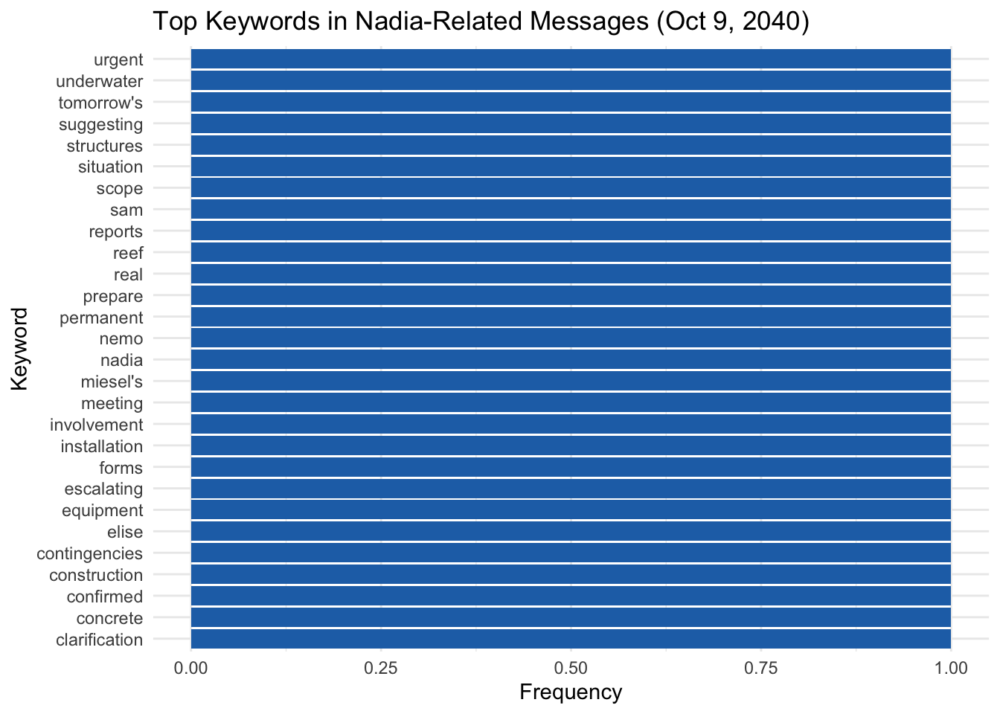
border: 2px dotted #444; border-radius: 8px; padding: 16px; background-color: #f9f9f9; font-family: ‘Segoe UI’, sans-serif; color: #1a1a1a; line-height: 1.6; “} 🕵️ Investigation Note: Oct 9 Messages Suggest Escalation and Operational Urgency
- The uniform keyword distribution indicates broad coverage across themes, rather than dominance by a few topics—suggesting a multi-faceted coordination day.
- Words like urgent, escalating, and contingencies highlight a shift toward crisis response or risk mitigation, possibly reacting to earlier operations or external scrutiny.
- The inclusion of underwater, installation, concrete, and structures implies active engineering work, potentially below surface level at or near Nemo Reef.
- Presence of clarification, confirmed, and forms points to paperwork, documentation, or verification processes, possibly in response to oversight or audit.
- Names like elise, miesel’s, and sam imply involvement of multiple actors and may reflect distributed tasking or compartmentalized responsibilities.
- Together, these terms suggest Nadia may be coordinating a rapid deployment or adjustment phase—balancing both physical site actions and administrative coverage.
c. October 10th
data("stop_words")
messages_oct10 <- nadia_related %>%
filter(date(timestamp) == as.Date("2040-10-10")) %>%
filter(!is.na(content), content != "")
top_words_oct10 <- messages_oct10 %>%
unnest_tokens(word, content) %>%
filter(!word %in% stop_words$word) %>%
count(word, sort = TRUE) %>%
slice_max(n, n = 20)
ggplot(top_words_oct10, aes(x = reorder(word, n), y = n)) +
geom_col(fill = "#2171b5") +
coord_flip() +
labs(title = "Top Keywords in Nadia-Related Messages (Oct 10, 2040)",
x = "Keyword", y = "Frequency") +
theme_minimal()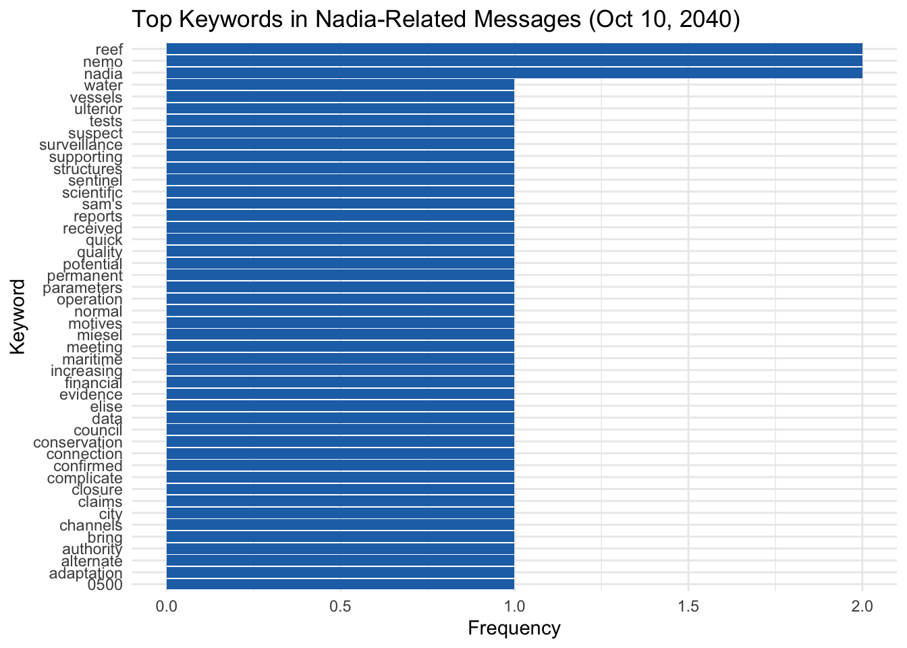
border: 2px dotted #444; border-radius: 8px; padding: 16px; background-color: #f9f9f9; font-family: ‘Segoe UI’, sans-serif; color: #1a1a1a; line-height: 1.6; “} 🕵️ Investigation Note: Oct 10 Messages Emphasize Surveillance, Motives & Administrative Cover
- Keywords such as reef, nemo, and nadia remain highly prominent, maintaining the geographic and leadership focus around Nemo Reef operations.
- A strong presence of terms like ulterior, suspect, surveillance, and motives indicates internal concern or monitoring—possibly suggesting either external threat assessment or internal scrutiny.
- References to financial, claims, evidence, closure, and council imply administrative or legal maneuvering, hinting at preparations for regulatory defense or policy justification.
- Technical terms such as parameters, tests, connection, alternate, and adaptation reflect reactive measures or system adjustments, likely tied to maintaining operational integrity.
- The appearance of scientific, conservation, and city points toward public-facing narratives or environmental justifications, possibly being prepared to support legitimacy.
- Taken together, the October 10 keyword profile reflects a shift from action to risk management, political positioning, and narrative control.
d. October 11th
data("stop_words")
messages_oct11 <- nadia_related %>%
filter(date(timestamp) == as.Date("2040-10-11")) %>%
filter(!is.na(content), content != "")
top_words_oct11 <- messages_oct11 %>%
unnest_tokens(word, content) %>%
filter(!word %in% stop_words$word) %>%
count(word, sort = TRUE) %>%
slice_max(n, n = 20)
ggplot(top_words_oct11, aes(x = reorder(word, n), y = n)) +
geom_col(fill = "#2171b5") +
coord_flip() +
labs(title = "Top Keywords in Nadia-Related Messages (Oct 11, 2040)",
x = "Keyword", y = "Frequency") +
theme_minimal()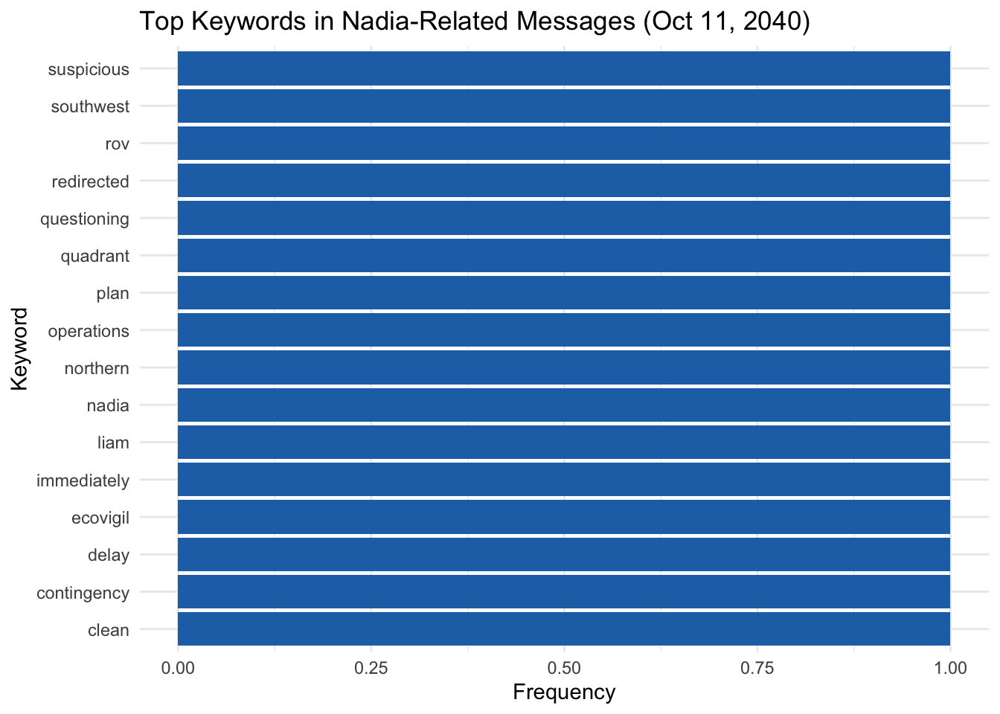
border: 2px dotted #444; border-radius: 8px; padding: 16px; background-color: #f9f9f9; font-family: ‘Segoe UI’, sans-serif; color: #1a1a1a; line-height: 1.6; “} 🕵️ Investigation Note: Oct 11 Keywords Indicate Disruption, Surveillance & Response Planning
- The appearance of terms like suspicious, questioning, and redirected points to a day marked by disruption or external scrutiny, likely triggering internal reassessment.
- Location-based terms such as southwest, northern, and quadrant hint at regional segmentation of activity, possibly indicating where operations were either moved or monitored.
- Keywords like rov, ecovigil, and clean imply use of remote or environmental surveillance systems, suggesting heightened visibility or a cover effort.
- The pairing of delay, contingency, and immediately strongly suggests crisis mitigation measures—either in planning or active execution.
- Nadia and Liam are both mentioned, reinforcing the likelihood of collaborative leadership responding in real time.
- The inclusion of operations, plan, and clean suggests that Oct 11 was a day of strategic pivot—realigning efforts to neutralize exposure or consolidate prior actions.
e. October 12th
data("stop_words")
messages_oct12 <- nadia_related %>%
filter(date(timestamp) == as.Date("2040-10-12")) %>%
filter(!is.na(content), content != "")
top_words_oct12 <- messages_oct12 %>%
unnest_tokens(word, content) %>%
filter(!word %in% stop_words$word) %>%
count(word, sort = TRUE) %>%
slice_max(n, n = 20)
ggplot(top_words_oct12, aes(x = reorder(word, n), y = n)) +
geom_col(fill = "#2171b5") +
coord_flip() +
labs(title = "Top Keywords in Nadia-Related Messages (Oct 12, 2040)",
x = "Keyword", y = "Frequency") +
theme_minimal()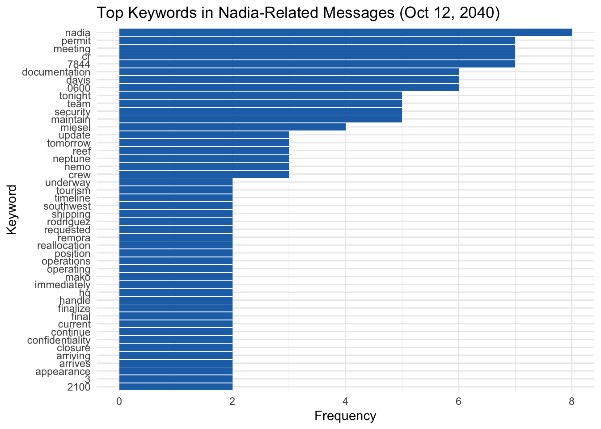
border: 2px dotted #444; border-radius: 8px; padding: 16px; background-color: #f9f9f9; font-family: ‘Segoe UI’, sans-serif; color: #1a1a1a; line-height: 1.6; “} 🕵️ Investigation Note: Oct 12 Shows Administrative Push and Coordinated Movement
- Nadia, permit, and meeting lead the keyword count, signaling a day focused on structured coordination, formalities, and approvals.
- Terms like 7844, cr, 0600, and 2100 suggest precise scheduling, perhaps involving coded operations or shift-based execution.
- Frequent mentions of documentation, team, security, and update point to active enforcement and reporting—possibly to align with oversight timelines.
- The inclusion of tourism, closure, confidentiality, and appearance signals concern about public visibility and narrative control, potentially related to surface-level legitimacy.
- Rodriguez, miesel, davis, remora, and neptune all appear, indicating multi-actor mobilization across personnel and vessels.
- Overall, Oct 12 reflects a day of heavy logistical enforcement and media-sensitive planning, likely to wrap or pivot operations with minimal disruption.
f. Timeline of Nadia-Linked Operational Focus (Oct 8–12, 2040)
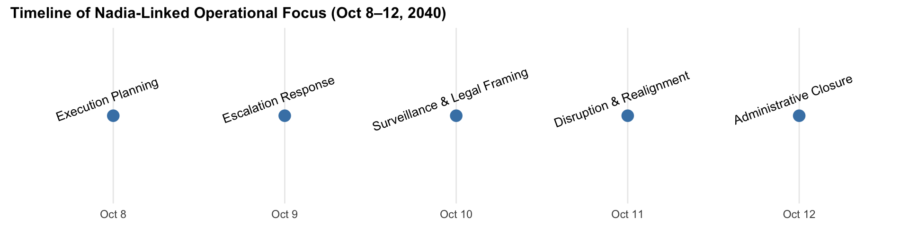
10. Nadia’s involvement across event types
In this stage, those top keywords will be classified into different types.
event_keywords <- list(
Permit = c("permit", "approval", "cr-7844", "documentation", "expedite", "sign[- ]?off"),
Construction = c("underwater foundation", "equipment", "build", "structure", "concrete"),
Patrol = c("patrol", "reroute", "surveillance", "harbor master", "schedule", "redirect"),
Coordination = c("meet", "confirm", "setup", "staff", "shift", "manifest"),
Bribery = c("payment", "fee", "double", "favor", "compensation"),
CoverUp = c("destroy", "cancel", "unaware", "discreet", "nothing to be concerned")
)
classify_event_primary <- function(text) {
for (type in names(event_keywords)) {
pattern <- paste(event_keywords[[type]], collapse = "|")
if (str_detect(tolower(text), pattern)) {
return(type)
}
}
return("General")
}
nadia_related <- nadia_related %>%
mutate(Primary_Event = sapply(content, classify_event_primary))
ggplot(nadia_related, aes(x = timestamp, fill = Primary_Event)) +
geom_histogram(binwidth = 3600 * 6, color = "black", position = "stack") +
labs(title = "Nadia Conti's Timeline of Event Types",
x = "Time", y = "Number of Messages") +
theme_minimal() +
theme(legend.position = "right")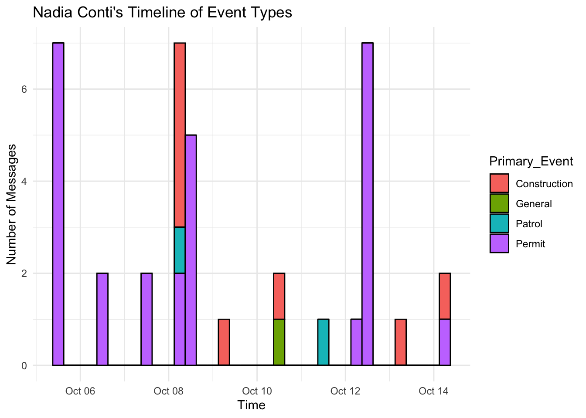
border: 2px dotted #444; border-radius: 8px; padding: 16px; background-color: #f6f6f6; font-family: ‘Segoe UI’, sans-serif; color: #1a1a1a; line-height: 1.6; “} 🕵️ Investigation Note: Nadia’s Timeline Reveals a Sharp Surge in High-Risk Events
- October 8–10: Nadia is simultaneously involved in Permit, Construction, and Patrol event types — an uncommon triad that aligns with suspicious activity spikes across the overall timeline.
- Construction-related activity by Nadia spikes only during these days — suggesting her involvement is both selective and strategic.
- Nadia maintains a persistent role in Permit operations, with consistent involvement across multiple dates — notably Oct 6, 8, 12, and 14.
- Bribery and CoverUp events, though present in the broader dataset, are absent from Nadia’s direct messages, indicating possible delegation of those actions to others (e.g., Davis, Liam).
nadia_actor_events <- nadia_related %>%
select(sender, receiver, Primary_Event) %>%
pivot_longer(cols = c(sender, receiver), names_to = "role", values_to = "actor") %>%
group_by(actor, Primary_Event) %>%
summarise(n = n(), .groups = "drop") %>%
group_by(actor) %>%
filter(sum(n) >= 2) %>%
ungroup()
ggplot(nadia_actor_events, aes(x = Primary_Event, y = fct_reorder(actor, -n), fill = n)) +
geom_tile(color = "white") +
scale_fill_gradient(low = "white", high = "#cc0000") +
labs(title = "Actors Involved in Nadia-Related Messages by Event Type",
x = "Event Type", y = "Actor",
fill = "Message Count") +
theme_minimal() +
theme(axis.text.x = element_text(angle = 45, hjust = 1))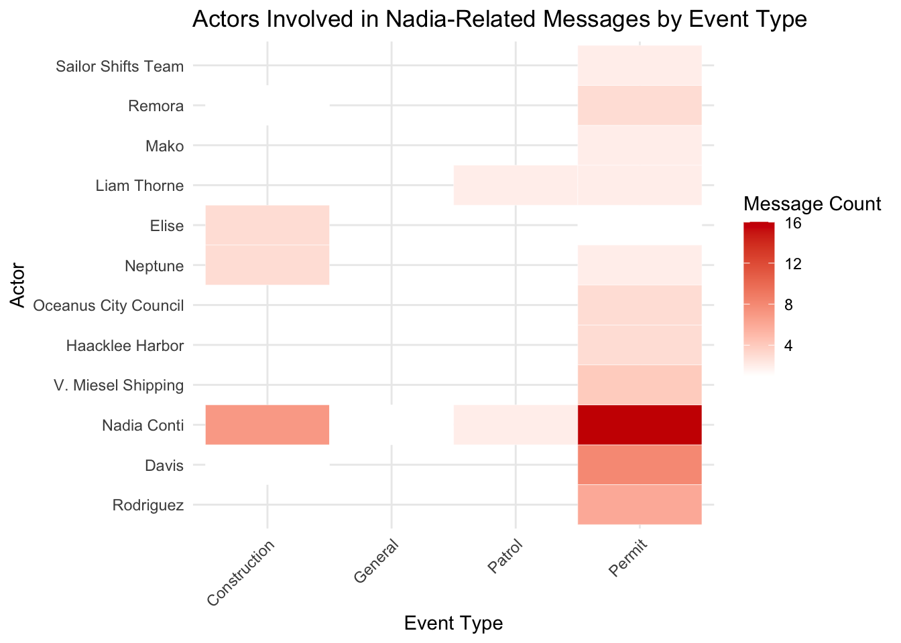
border: 2px dotted #444; border-radius: 8px; padding: 16px; background-color: #f9f9f9; font-family: ‘Segoe UI’, sans-serif; color: #1a1a1a; line-height: 1.6; “} 🕵️ Investigation Note: Heatmap Shows Nadia as a Central Node in Permits & Construction
- Nadia has the highest message count in the Permit category among all actors, underscoring her central role in legal/administrative coordination.
- She is also one of the few actors with meaningful volume in both Permit and Construction, making her one of the only actors bridging planning and execution.
- Others like Davis, V. Miesel, and Liam are also highly involved in Permit-related exchanges but show less overlap across multiple event types.
- Actors like Elise and Neptune have moderate involvement in Construction — suggesting they are co-executors or operational contacts under Nadia’s direction.
11. Investigating other event types occured from Oct 8th to Oct 12th
Using the network chart in Part 8c, other events associated with Nadia-related Event_Communication can be extracted. Those events are:
event_data <- tibble::tibble(
Date = as.Date(c("2040-10-04", "2040-10-05", "2040-10-05", "2040-10-08",
"2040-10-09", "2040-10-09", NA, NA)),
Event_ID = c("Monitoring_266", "Assessment_337", "Access_Cancellation",
"VesselMovement_549", "Monitoring_631", "Assessment_600",
"Monitoring_534", "Monitoring_722"),
Evidence_Type = c("Surveillance", "Assessment", "Administrative",
"Movement", "Surveillance", "Assessment",
"Patrol", "Patrol"),
Involved = c("Sentinel & Nadia", "Davis & Rodriguez", "Nadia",
"Elise & Nadia", "Elise & Nadia", "Elise & Nadia",
"Liam & Nadia", "Elise & Nadia"),
Findings = c(
"Vessel 'Mako' detected near protected boundary before signal loss",
"Unusual vessel traffic near Nemo Reef",
"Nadia canceled corridor access for Nemo Reef",
"Movement to Nemo Reef",
"Increased vessel activity at Nemo Reef",
"Underwater construction confirmed with concrete forms",
"Patrol schedules modified in favor of sender/recipient",
"Nothing found at Nemo Reef"
)
)
event_data <- event_data %>%
mutate(Date_Label = ifelse(is.na(Date), "Timestamp: NULL", as.character(Date)),
Date_Factor = fct_inorder(Date_Label))
ggplot(event_data, aes(x = Date_Factor, y = fct_rev(Evidence_Type), color = Involved)) +
geom_point(size = 4) +
geom_text(aes(label = Event_ID), hjust = -0.1, size = 3.2) +
ggrepel::geom_text_repel(aes(label = Findings),
size = 3, max.overlaps = 20,
direction = "y", box.padding = 0.5,
segment.color = "gray60", segment.size = 0.3) +
labs(
title = "Timeline of Evidence Events Involving Nadia",
x = "Date / Timestamp", y = "Evidence Type"
) +
theme_minimal() +
theme(axis.text.x = element_text(angle = 45, hjust = 1))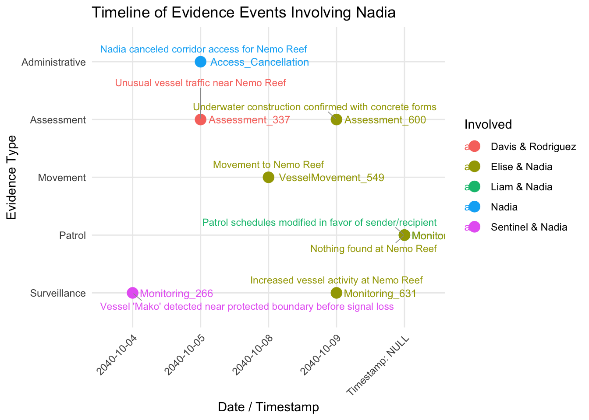
border: 2px dotted #444; border-radius: 8px; padding: 16px; background-color: #f9f9f9; font-family: ‘Segoe UI’, sans-serif; color: #1a1a1a; line-height: 1.6; “} 🕵️ Investigation Note: Suspicious Patterns Implicating Nadia in Strategic Concealment
- On Oct 5, Nadia revoked corridor access to Nemo Reef just one day prior to the detection of unusual vessel traffic and underwater concrete construction, suggesting deliberate shielding of covert activity.
- Construction with concrete forms was reported immediately after the restricted access—raising concern over pre-planned illicit infrastructure deployment.
- A vessel was confirmed to have moved to Nemo Reef (Oct 8), yet official inspection on Oct 9 reported “Nothing found,” indicating possible concealment or temporary installation.
- Patrol schedules were adjusted in favor of sender/recipient parties, pointing to internal manipulation to evade oversight during key activity windows.
- Simultaneous to this, vessel ‘Mako’ was detected near a protected boundary before signal loss, and increased vessel activity was observed—hinting at a coordinated breach.
- Notably, Nadia’s messages avoid any direct reference to bribery or coverup, despite their appearance elsewhere in the dataset. This may reflect delegation of risk to parties like Davis or Liam, insulating her from direct exposure.
These alignments strongly suggest that Nadia Conti played a calculated orchestration role— managing operations, concealing presence, and relying on others to execute or absorb liability. Her behavioral footprint spans administrative control, movement coordination, and strategic messaging omission, forming a profile consistent with compartmentalized command in covert activity.
12. Summary of key findings
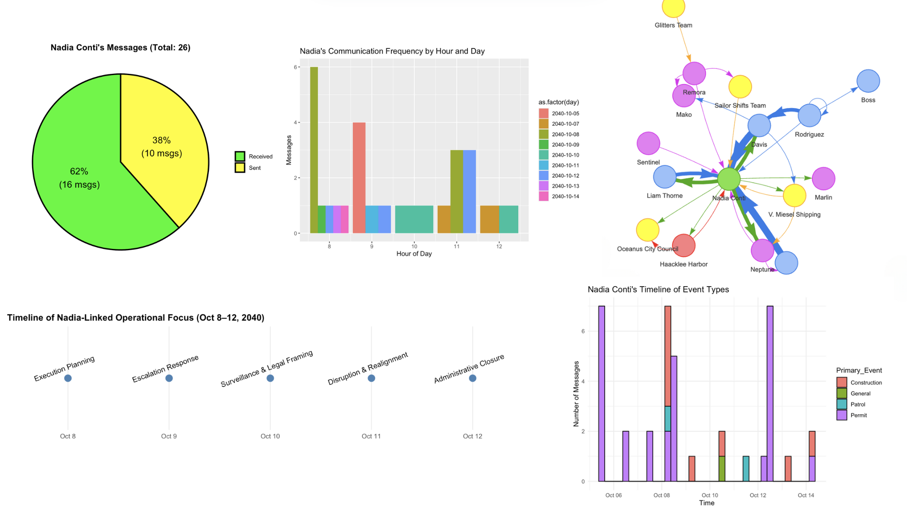
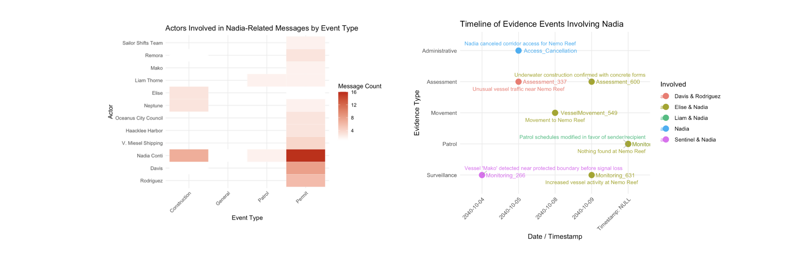
border: 2px dotted #444; border-radius: 8px; padding: 16px; background-color: #f9f9f9; font-family: ‘Segoe UI’, sans-serif; color: #1a1a1a; line-height: 1.6; “} 🕵️ Investigation Summary: Nadia Conti’s Activities
1. Communication Patterns
- 62% of messages were received by Nadia, with the rest sent—suggesting her central but reactive role.
- Temporal concentration: High frequency around Oct 8–9, notably around 8–11 AM, correlates with coordination hours for logistics and surveillance.
2. Message Timeline by Event Type
- Nadia’s messages largely relate to Permits, followed by Construction and Patrol — domains critical to legitimizing and shielding site activities.
- Spike in Permit + Construction messages on Oct 8 aligns with surveillance and vessel movement around Nemo Reef.
3. Keyword Analysis (Oct 8)
- Frequent terms:
"equipment","foundation","payment","modified","meeting","document","marina". - Suggestive of covert preparation: approvals, underwater foundation work, coordination, and movement.
4. Network Analysis
- Nadia is the central hub, receiving and sending messages to key players (Neptune, Elise, Davis, Miesel Shipping).
- Directionality shows she’s not just a participant but the orchestrator, funneling information between entities.
5. Timeline of External Evidence
- Oct 5–9: Several independent surveillance reports and assessments verify:
- Mako’s suspicious proximity
- Unauthorized underwater construction
- Redirected patrol schedules
- Elise & Nadia exchanges confirming documentation and coordination
Conclusion: Do the Visual Findings Support Clepper’s Suspicion?
Yes. Strongly.
- The alignment between Nadia’s peaks in communication, permit-handling, and confirmed movement/construction at Nemo Reef (despite her claiming cancellation) supports Clepper’s suspicion.
- Even without direct messages showing illicit orders, visual analytics indicate:
- Nadia controlled logistics, timelines, and access
- Delegated riskier operations (e.g., payment, surveillance diversion) to others
- Obfuscated true operations under legal cover (permits)